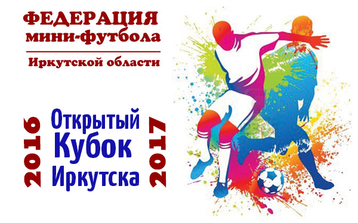

"ИРАЭРО" и "САЛЮТ" сыграют в финале кубка Иркутска 24 декабря
В предстоящую субботу, в спорткомплексе "Зенит" нас ожидает большой мини-футбол - финальный матч Кубка Иркутска. О том, кто в этой встрече фаворит, и есть ли он вообще,говорить, наверное, бессмысленно. На то он и кубок, чтобы эти фавориты не дремали, а зрители получали настоящие кубковые эмоции. Думаем, эмоции будут получены ими сполна. Итак, 24 декабря, спорткомплекс "Зенит", 19:00. "ИрАэро" против "Салюта".

"ИрАэро", действующий обладатель Кубка, сейчас находится в очень неплохой, а попросту говоря, отличной форме. Команда давно избавилась от травм, пик которых пришелся на участие авиаторов в Кубке России. Участие команды (помимо чемпионата области) в первенстве России среди команд первой лиги добавляет "ИрАэро" сыгранности, которая и без этого является очень неплохой, а стабильный состав позволяет решать самые высокие задачи во всех турнирах, где команда участвует.
Но и "Салют", уверенно пройдя всю кубковую дистанцию, вряд ли намерен остановиться в полушаге от главного трофея. Тем более, что "пиротехники" знают, как играть с соперником. Напомним, что в прошлом сезоне "Салют" стал единственной командой, кто смог отобрать у "ИрАэро" очки. О сегодняшней же силе команды говорят, в частности, пять побед в чемпионате Иркутской области. Так что состав "Салюта" очень силен, даже с учетом того, что в финале оранжевые не могут рассчитывать на двух нападающих, пропускающих встречу из-за дисквалификации. К тому же, "пиротехники" традиционно считаются кубковой командой. Одна победа в полуфинале над обладателем Кубка Перминова "Амидом" чего стоит! Так что, нас в любом случае ждет зрелищный, интересный футбол!
"ИрАэро" (Иркутск) - "Салют" (САЛЮТ-1)
24 декабря. Иркутск, спорткомплекс "Зенит". Начало - 19.00.
Антон Кусов, тренер команды "ИрАэро":
- Настраиваемся на финал, как на последний бой, который, как известно, самый трудный. Думаю, все игроки это понимают. Сейчас, от игры к игре, команда добавляет уверенности, в эмоциональном плане у нас все спокойно и думаю, что мы подходим к финалу в нормальном физическом состоянии.
Естественно, все понимают, что мы будем играть только на победу, чтобы повторить прошлогодний успех. Но соперник более чем достойный и серьезный, все люди поигравшие и думаю, что шансы в этом матче будут "пятьдесят на пятьдесят". Никакой недооценки соперника быть не может, к нему идет настоящее уважение. Мы готовы дать бой, и пусть победит сильнейший.
Хочется увидеть на финале как можно больше зрителей. К сожалению, у нас большие проблемы с залами и зрителям не хватает спортивных эмоций. Но "Зенит" отличный зал и хочется чтобы на финале всё было, что называется, битком. Мы играем для болельщиков и хочется, чтобы их на матчах было все больше и больше.
Игорь Куроедов, тренер команды "Салют":
- Финальный матч Кубка Иркутска означает, что всё уже позади и надо сконцентрироваться на этой важнейшей встрече. К матчу мы подходим в боевом составе, насколько это возможно на сегодня. Конечно, потери есть. Так, двое напададюащих пропускают финал из-за красных карточек. Но без них мы провели несколько матчей, поэтому было какое-то время, чтобы перестроиться, наиграть на их место других ребят.
В целом можно говорить, что к финалу мы подошли в хорошем состоянии. Конечно, соперник очень силен, и мы с большим уважением относимся и к команде "ИрАэро", и к футболистам. Удивим мы чем-нибудь соперника? Пусть это будет нашим секретом. Но будем бороться, будем биться, попробуем зацепиться за счет, за игру, за победу.
http://football-irkutsk.ru/matchast-2/otchety/47-minifootball/6984-iraero-i-salyut-sygrayut-v-finale-kubka-irkutska-24-dekabrya.html
Автор: Сайт Футбол-Иркутск.ру
22 Декабря 2016